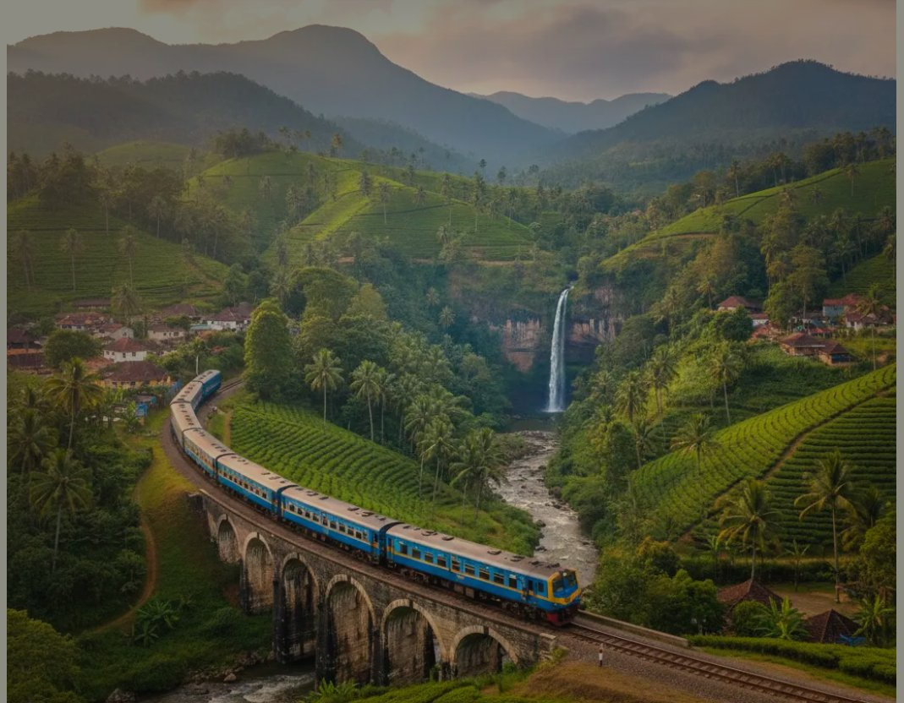
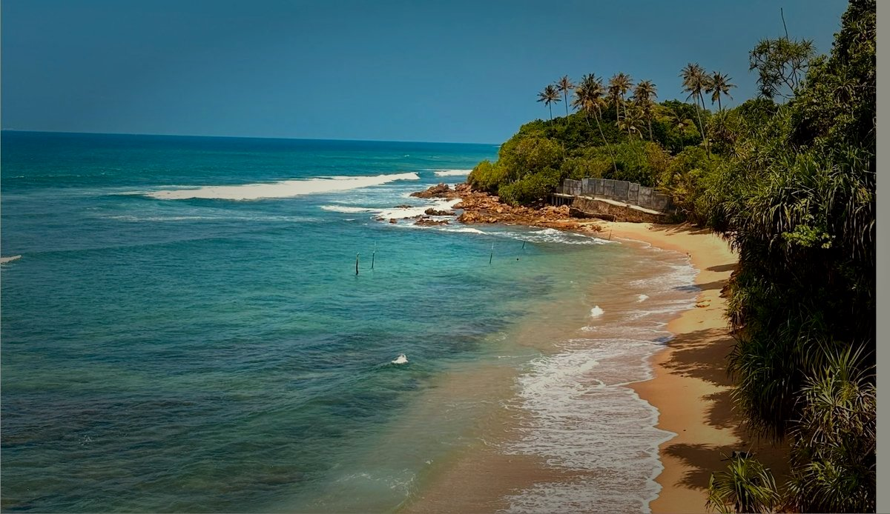

Sri Lanka · Slow Travel · Honest Guides
Real train times. Verified Wi-Fi speeds. Community safety advice. Hidden villages nobody else writes about. No agencies, no generic lists.
Five gaps in Sri Lanka travel information — filled with verified, community-sourced content for slow travellers.
Live delay data, unreserved carriage guides, real bus routes. Kandy to Ella, Colombo to Galle — every route demystified.
Explore transport →Cafes with tested Mbps speeds, co-working reviews, long-term rental prices, and visa renewal guides for Hiriketiya, Ahangama & Ella.
Find your base →Not generic warnings. Specific, community-sourced advice on trusted tuk-tuk apps, solo hike safety, and well-lit guesthouses.
Read safety guides →Not Sigiriya. Not Ella Rock. Lesser-known villages, rural homestays, and secret surf breaks truly off-path travellers are finding.
Discover gems →Contact surf instructors, village home-cooks, and wildlife guides directly — with zero agency fees inflating the price.
Browse directory →Our most-read guides, verified and refreshed with community input.

Which carriage, how to get unreserved seats, live delay patterns, and what to do when it's sold out.
Co-working options, monthly rent estimates, and where to find community in Hiriketiya.

Community-sourced quiet, uncommercialised stretches of Sri Lankan coast.
Read our guide first, then book through our affiliate links — no extra cost to you, and it keeps this site running.
Affordable, warm, and increasingly remote-friendly — Sri Lanka suits nomads who want to actually settle in rather than just pass through.
Community-verified tips from women who have actually travelled these routes — updated regularly.
PickMe and Uber ranked by our community of female travellers, over hailing off the street.
Which trails have reliable mobile signal, best times of day, and when a local guide is worth it.
Rated specifically for well-lit entrances, secure locks, and responsive hosts.
Which carriages to use, which routes are safe after dark, and how to communicate locally.
Up-to-date Sri Lanka tourist police numbers, embassy contacts, and community WhatsApp groups.
Lifeguard coverage, rip current patterns by season, and surf schools with women-first options.
Our directory connects you directly with independent guides, surf instructors, and home-cooks across Sri Lanka. No platform fees, no middlemen.